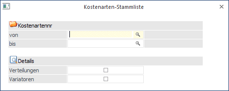
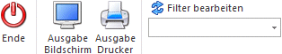
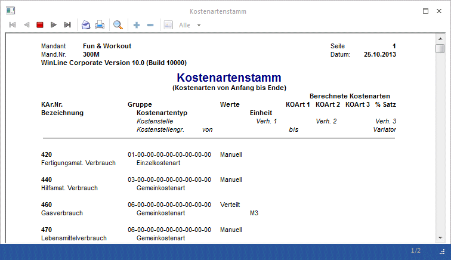

Die Ausgabe der Kostenartenliste wird im Menüpunkt
1 Auswertungen
1 Stammdatenlisten
1 Kostenartenliste
gestartet.

Buttons

Ø Ende
Das Fenster wird geschlossen.
Ø Ausgabe Bildschirm/Drucker
Die Ausgabe kann über den Drucker oder den Bildschirm erfolgen.
Ø Filter
Sie haben die Möglichkeit, einen sogenannten Filter zu definieren. Mit diesem Filter können zusätzliche Selektions- und Sortierkriterien hinterlegt werden. Die einzelnen Definitionen können auch fix mit einem eigenen Filternamen gespeichert werden.
Selektionskriterien
Ø Kostenartennr. von - bis
Der Ausdruck erfolgt nur innerhalb der eingegebenen Kostenartengrenzen. Es wird geprüft, ob der Benutzer die Berechtigung hat (WinLine KORE/Stammdaten/Kostenarten), die eingegebene Kostenart zu verwenden.
Details
Ø Verteilungen
Durch Aktivieren der Checkbox "Verteilungen" kann definiert werden, ob die in der Kostenart ggf. hinterlegen Verteilungen auf Kostenstellen mit angedruckt werden sollen.
Ø Variatoren
Wenn diese Option aktiviert ist, dann werden die Variatoren mit angedruckt, die ggf. bei Gemeinkostenarten hinterlegt sind.

Für jede Kostenart ist in der Liste ersichtlich, welcher Gruppe sie angehört, die hinterlegte Einheit, auf welche Weise die Kostenart bei der Erfassung verteilt wird, oder, wenn die Kostenart eine zu berechnende ist, aus welchen Kostenarten sie mit welchem Prozentsatz berechnet wird.